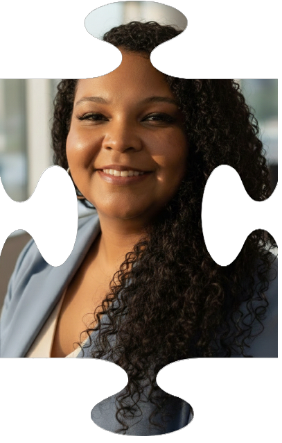

Um pouco de minha história
Com uma trajetória diversificada e cheia de desafios, venho acumulando experiências que unem técnica, gestão e inovação! Sou pós-graduada em Engenharia Metalúrgica, bacharela em Administração de Empresas e Tecnóloga em Segurança da Informação. Passei 13 anos no setor siderúrgico, lidando com o tratamento de águas e efluentes, e mais 12 anos no universo da TI, atuando com suporte remoto, suporte em campo e até mesmo formando novos profissionais como instrutora, gerente de treinamento e coordenadora de laboratório. Minha paixão pela tecnologia me levou a explorar linguagens como Java, JavaScript, Python, MySQL, CSS e HTML, além de desenvolver habilidades com ferramentas de design como Canva, Photoshop e CorelDRAW. Sempre em busca de aprendizado contínuo e aperfeiçoamento em gestão e inovação, conquistei as certificações Scrum Fundamentals Certified (SFC™ - SCRUMstudy) , Oracle Cloud Infrastructure Certified AI Foundations Associate e Oracle Cloud Infrastructure (OCI - 1Z0-1085-25). Atualmente, estou dedicada ao estudo de RAG e automações com N8N. Gosto de transformar desafios em oportunidades e conectar conhecimento técnico com soluções criativas. Estou pronta para encarar novos projetos e compartilhar minha experiência com entusiasmo e dedicação! 🚀
